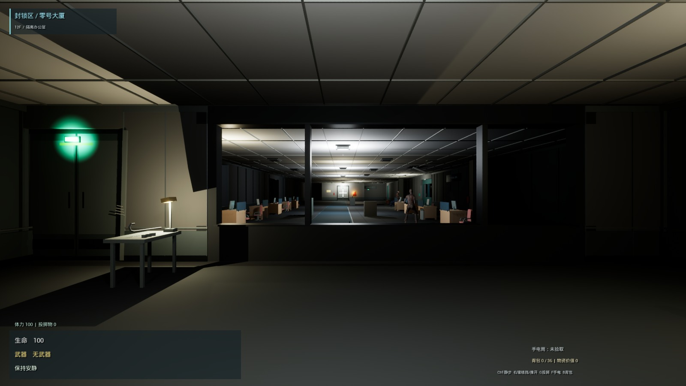
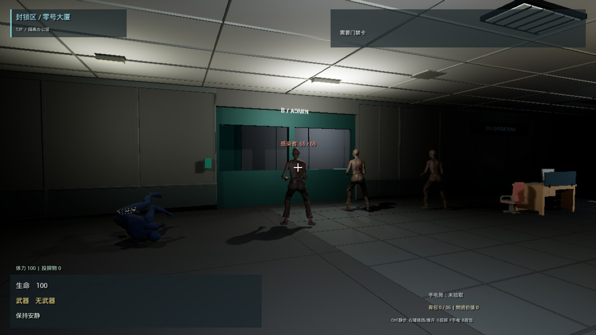
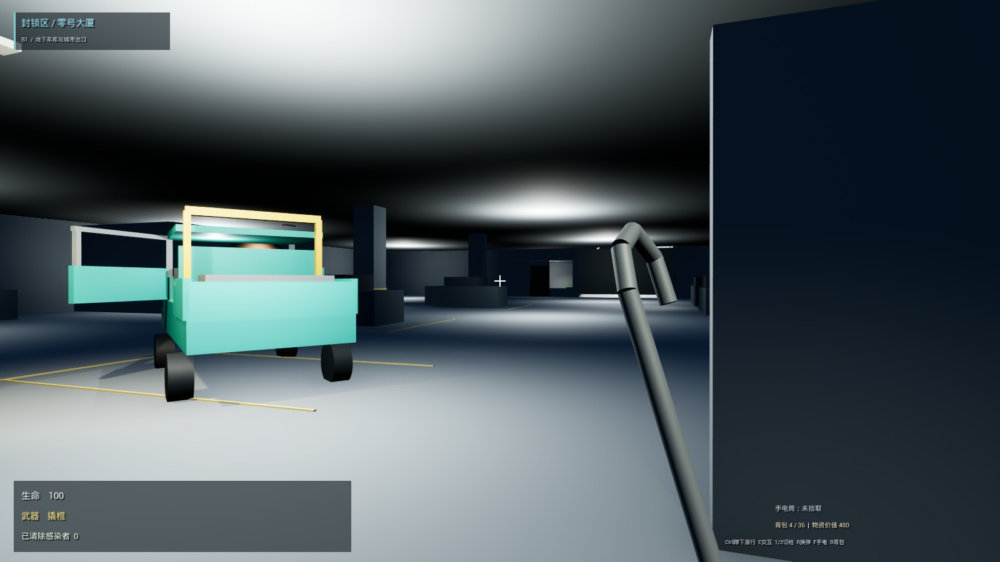

林顺 / 关卡设计与玩法机制 / V3 · 2026.09.25
封锁区：零号大厦
感染暴发后被封锁的医院后勤行政楼。设施维护人员利用撬棍和声音诱导恢复电梯，前往地下车库，驾驶维修皮卡撤离。
两关可玩原型 · UE 5.8.2 / Windows；第一关侧重路线、信息与声音决策，第二关保持自由驾驶灰盒。

两条路线交换不同成本
B 门路线需要观察感染者、投瓶引开、从保安取卡并刷门；通风路线从 10 会议室推柜攀入、抵达 06，以空间绕行与操作成本避开聚集区。两者在行政区汇合，经 D 去配电间，取保险丝后从 C 返回电梯。

为什么把全层风道收束为 10→06？
全层多出口提供广泛的安全穿行，却覆盖了多个地面问题。收束后保留避开 B 门的选择，同时保留去配电间的地面段落；代价是减少立体探索和落点选择。
声音规则怎样产生行动窗口？
瓶子、对讲机和脚步复用同一套听觉处理。强声调查承诺避免弱电台立刻覆盖目标；B 门的保持计时则从全开才开始。敌人移动和玩家拿卡同时发生，不能把所有秒数相加为保证安全的时间。
电梯：交互式收尾与跨关衔接
卡门前仍可自由行动；主动开始后锁定其他操作并提供普通敌人伤害保护，按住发力、松开暂停，自动入厢回身、夹手关门。利用闭门下行阶段准备车库，保持同一玩家与轿厢的空间连续感。
约 20 秒连续实机，无声。夹手为几何占位；此片段不证明声音听感，核心玩法有声演示待补。
第二关：提前挪车也是策略

斜停皮卡和半开驾驶门建立识别，出口旁玻璃岗亭解释开闸位置。玩家可以先试驾与挪车；开闸不复位车辆。双岛支持步行周旋与自由驾驶，撞倒或绕过 Boss 都可撤离。
仍为可玩灰盒；车辆手感、首次引导与压力平衡需真人试玩，不把脚本通行检查写成体验成功。